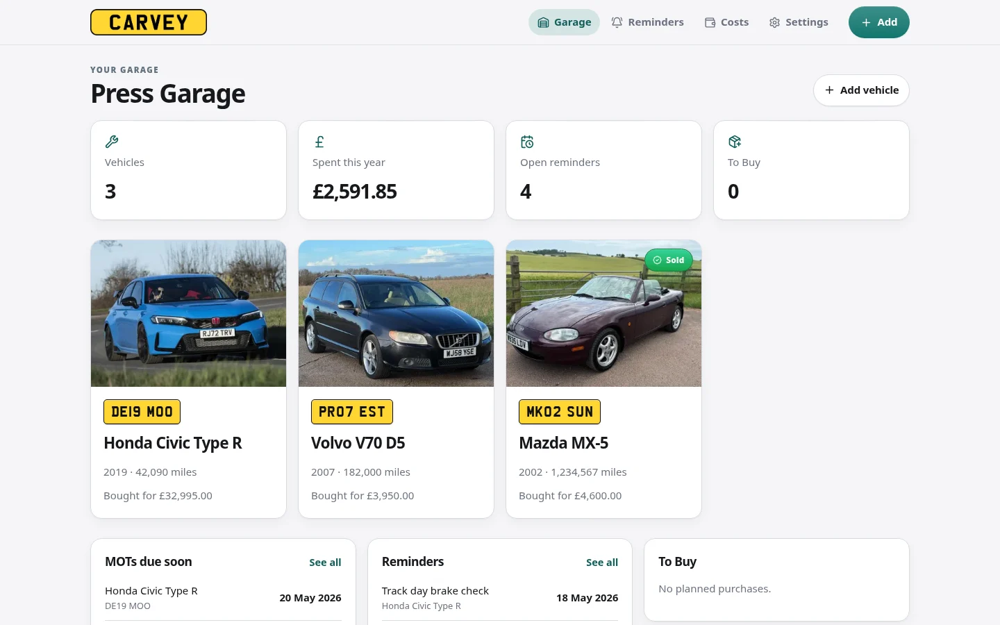
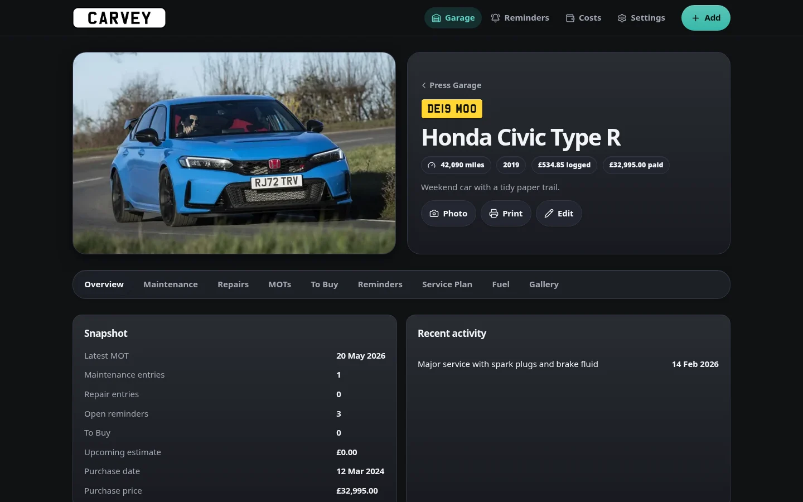
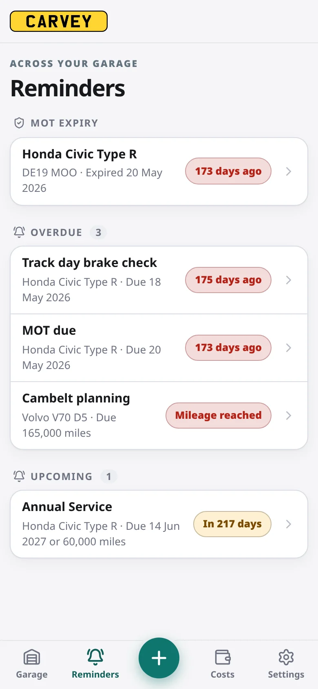
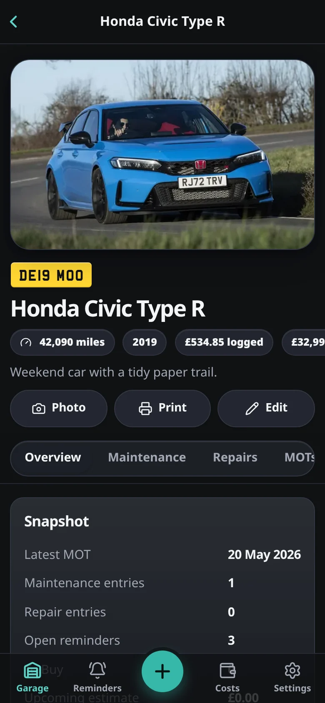
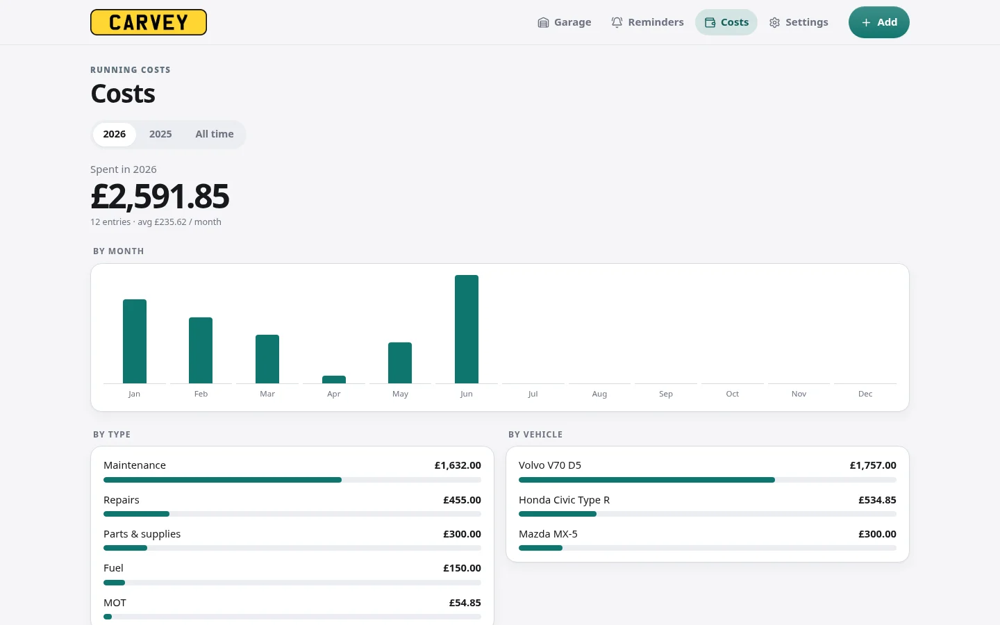
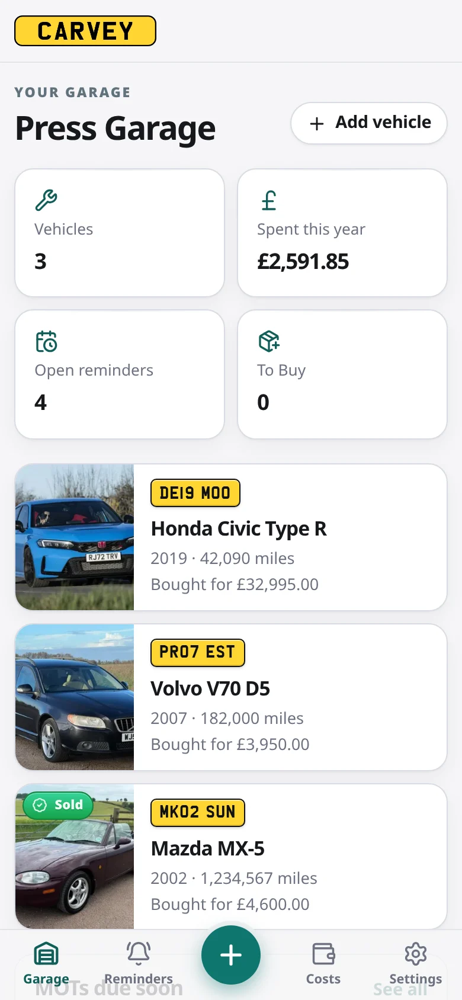

A garage for every car
Any number of vehicles, each with a photo, plate, mileage, purchase details and notes. Mark a car as sold and keep its history.
Self-hosted car maintenance
Service history, MOTs, reminders, receipts and running costs for every car you own, in one place. No accounts, no cloud: one SQLite database and an uploads folder.




Take a look
A garage overview, a page for every car, and running costs across the lot.

Every vehicle at a glance, with spend this year, open reminders, MOTs due soon and items to buy.
Maintenance, repairs, MOTs, fuel, reminders, service plan, to-buy list and gallery, each in its own tab.
Spend by month, by type and by vehicle, for any year or all time.
On your phone
Install Carvey to your home screen as a PWA. On a phone you get tab navigation, a quick-add button and bottom-sheet forms.

Features
From oil changes to MOTs, every detail for every vehicle lives in one tidy place.
Any number of vehicles, each with a photo, plate, mileage, purchase details and notes. Mark a car as sold and keep its history.
By date, mileage or both. Logging an MOT resets the MOT reminder automatically.
Spend by month, type and vehicle, per year or all time, with fuel included.
Date, mileage, cost, category, garage and notes on every entry, with receipts, invoices and photos attached as PDF or image. Print the whole service history when you sell.
Reusable intervals, like oil every 12 months or 6,000 miles, linked to reminders.
Plan parts, then turn them into a maintenance or repair entry once bought.
Fill-ups with volume, cost and odometer, counted in your running costs.
Any currency, miles or km, litres or gallons. MOT, inspection, a custom name or none.
Light and dark mode, ten colour palettes, and rounded or boxy shapes.
Database and uploads in one zip, with a preview before you restore.
Built-in login, or turn it off behind a trusted reverse proxy.
A clean, full service history for the next owner, or for your own files.
Keep photos of each car, from the day you bought it to the latest wash.
Install
Carvey ships as a single Docker container. No external database, no extra services.
Use Compose, a one-line docker run, or Unraid Community Apps.
Go to http://localhost:3000 in your browser.
Set up the admin login on first run, then add your first car.
services: carvey: image: ghcr.io/revise0592/carvey:latest ports: - "3000:3000" volumes: - ./data:/app/data environment: - TZ=Europe/London restart: unless-stopped
$ docker run -d \ --name carvey \ -p 3000:3000 \ -v ./data:/app/data \ -e TZ=Europe/London \ --restart unless-stopped \ ghcr.io/revise0592/carvey:latest
# 1. Open Apps from your Unraid dashboard # 2. Search for Carvey # 3. Click Install, no command line needed
In one SQLite database and an uploads folder under CARVEY_DATA_DIR (/app/data in Docker). Mount that folder as a volume, or use the one-click backup in Settings to download everything as a zip.
No. There are no external services, accounts or analytics. Carvey runs entirely on hardware you control.
Yes. Carvey is an installable PWA. Open it in your phone's browser and add it to your home screen for a full-screen app with tab navigation and quick add.
Yes. Under Settings → Regional you can pick any ISO 4217 currency, miles or kilometres, litres or gallons, the date format and plate colour. The annual test can be called MOT, Inspection, a custom name, or turned off.
Yes. The built-in login can be turned off when Carvey sits behind a trusted proxy that handles sign-in for you, such as Authelia or Authentik.
Run docker exec -it <container> node scripts/reset-password.mjs, with no restart needed. Or set CARVEY_RESET_PASSWORD, restart, sign in, then remove the variable and restart again.
Free, open source and yours to keep.